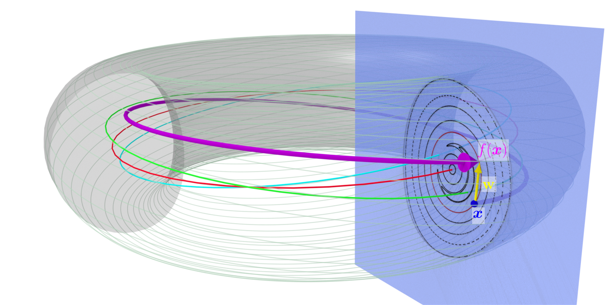

Field Line map
In the study of continuous dynamical systems, it is often convenient to consider a discrete map defined by the intersection of the trajectories with a lower-dimensional subspace and which captures some properties of the continuous case. In the case of magnetically confined plasmas, the particles loop around toroidally and the intersection of their trajectories with a constant \(\phi\) cross-section reveals the distinct region of different field line behaviour : closed surfaces, islands, chaotic regions. This section is known as a Poincaré section and to compute it the field lines need to be integrated and record their intersection with the desired cross-section.
{kind=link}
Flow of a vector field
Given a magnetic field \(\textbf{B}\), or more generally any vector field in 3D, we can define a flow \(\Phi(x,t)\) as the evolution of a point \(x\) when following the field from time \(t_0\) to \(t\). It means that the tangent vector for fixed \(x\) is equal to \(\partial_t \Phi(x,t) = \mathbf{B}(\Phi(x,t),t)\). And we can define \(\Phi(x,t)\) as :
This is a system of 3 ordinary differential equations (ODEs) that can be solved numerically. To record the intersection with a \(\phi=\phi_0\) section, the choice of coordinate is relevant. In cartesian coordinates, the current \(\phi(x,y)\) need to be verified at every step and when it crosses the desired value, one need to interpolate or integrate to look for a more precise intersection. In cylindrical \((r,\phi,z)\) and toroidal \((\rho,\phi,\theta)\) coordinates, the problem is much simpler as the \(\phi\) coordinate is already present. In those two cases, we need to consider the \(\phi\) coordinate as the time variable. Therefore the vector field, that can be written :
need to have a non-vanishing \(B^\phi\) component. In this case, the map :
is a well-define change of variable. Indeed \(\Phi(x,t)\) can be reparametrized as \(\Phi(x,\phi) = \Phi(x,t(\phi))\) and :
Due to the choice of coordinates the field will have at most a \(\phi\) periodicity of \(2\pi\), yet in stellarator configurations have azymuthal redundancy. Their period is \(T = 2\pi/n_\text{fp}\) where \(n_\text{fp}\in\mathbb{N}^\star\) is the number of field period in a complete toroidal rotation. For example, W7X and LHD have 5 and 10 field periods respectively. If the field is not periodic then \(n_\text{fp} = 1\).

The Poincaré section is identical for \(\phi_0\) and \(\phi_i + kT\), \(k\in\mathbb{Z}\). Writing \(\Omega\) the set of initial points in the \(\phi_i\) plane for which \(\Phi\) is effectively re-parametrizable between \(\phi_i\) and \(\phi_i + T\), allows to define the map \(\pmap : \Omega \rightarrow \mathbb{R}_+\times\mathbb{R}\) as :
The point \((x^1, x^2) \in \Omega\) are point in the initial section and should not be confused with the \(\Phi(x,\phi)^1\) and \(\Phi(x,\phi)^3\) components which are the evolution of the initial point after angle \(\phi\).
Flux conservation
As the evolution is performed by following \(\mathbf{B}\) and due to the magnetic field been divergence free \(\nabla\cdot\textbf{B} = 0\), the flux through any surface obtained by mapping a simple path in \(\phi_i\) to \(\phi_i + T\) will be zero. This result in the key property of \(\pmap\) being flux-conserving ; the flux through any closed surface \(\Sigma \subset \Omega\) is equal to the one through \(\pmap(\Sigma)\) :
Jacobian of \(\mathcal{P}\)
The Jacobian of the field line map as a matrix form \(\dpmap := \partial \pmap^{\{R, Z\}}/{\partial \{R, Z\}} \in \mathbb{R}^{2\times2}\). Here we distinguish between \(R, Z\) in the starting plane and the general evolution around the torus \(r = \Phi^r, z = \Phi^z\), which is a handy abuse of notation. For instance :
with \(B^r\) and \(B^\phi\) being evaluated at :
The integrand can then be developed using the chain rule :
and all the components can be written as a matrix multiplication by :
For example :
Determinant of the Jacobian
Using differential forms, it can be shown a relation for the determinant of the Jacobian matrix \(\dpmap\). If we write the flux in the form formalism, then \(\beta = B^\phi dR \wedge dZ\) and the integral becomes :
with \(\pmap^\star\beta\) the pullback of \(\beta\) through the field line map \(\pmap\). Then the flux conservation becomes \(\pmap^\star\beta(\pmap(x)) = \beta(x)\) and using the relation between the differential forms :
and we see that it implies here :
and we got the same formula back as a direct calculation.This shows the power of differential forms. This can be generalized to any number of iteration of the map.
Integration of a vector field along a field line
The integral of a vector field, say $textbf{A}$, along a curve is defined by~:
To get the integral along a field line curve $dot{gamma}$ should be replaced by the field line curve tangent vector, the same as the one optain above~:
The vector field can be the vector potential. Or, to get the arc length of the field line curve for instance, one must choose $A = dot{gamma}/Vertdot{gamma}Vert$, then~: